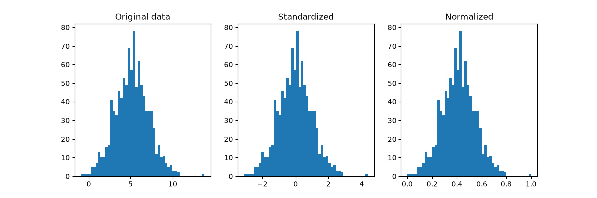
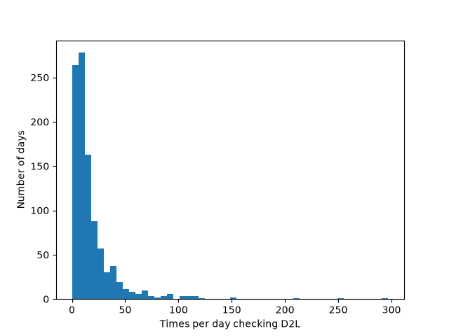

5: Basic Numeric Transformations
Code
 Demo Notebook
Demo Notebook Demo Data
Demo DataSlides
 PDF Slides
PDF Slides HTML Slides
HTML SlidesDATA 3464: Fundamentals of Data Processing
Basic Numeric Transformations
Charlotte Curtis September 23, 2026
Topic overview
- Why transformations are necessary
- Common 1:1 transformations
- Implementation notes
Resources used:
- Feature Engineering Section 6.1
- Hands on Machine Learning with Scikit-Learn and Tensorflow/PyTorch, Chapter 4. Available at MRU Library
- Scikit-learn user guide: Chapter 7
- Introduction to Machine Learning with Python. Available at MRU Library
Common 1:1 transformations
“Most models work best when each feature (and in regression also the target) is loosely Gaussian distributed” — Introduction to Machine Learning with Python
- Scaling: normalization or standardization
- Nonlinear transforms: log, square root, polynomial
- Fancier methods: Box-Cox, Yeo-Johnson
A brief intro to gradient descent
Many linear models minimize some cost function through gradient descent
The gradient is a vector of partial derivatives \[\nabla f = \begin{bmatrix} \frac{\partial f}{\partial x_1} \\ \frac{\partial f}{\partial x_2} \\ \vdots \\ \frac{\partial f}{\partial x_n} \end{bmatrix}\]
for some scalar-valued \(f(\mathbf{x})\)
Descending the gradient
For a loss (or cost) function such as \(MSE(\mathrm{\theta}) = \frac{1}{m}(\mathbf{X}\mathbf{\theta} - \mathbf{y})^T(\mathbf{X}\mathbf{\theta} - \mathbf{y})\)
Start with a random \(\mathbf{\theta}\)
Calculate the gradient \(\nabla_{\mathbf{\theta}}\) for the current \(\mathbf{\theta}\)
Update \(\mathbf{\theta}\) as \(\mathbf{\theta} = \mathbf{\theta} - \eta \nabla_{\mathbf{\theta}}\)
Repeat 2-3 until some stopping criterion is met
where \(\eta\) is the learning rate, or the size of step to take in the direction opposite the gradient.
Visualizing in 2D
The gradient has \(m + 1\) dimensions, where \(m\) is the number of features
step size \(\eta\) is a scalar parameter

Main takeaway: feature should be more or less on the same scale
Approaches to scaling

Standardize: \(x_{scaled} = \dfrac{x - \mu_x}{\sigma_x}\)
Normalize: \(x_{scaled} = \dfrac{x - \mathrm{min}(x)}{\mathrm{max}(x) - \mathrm{min}(x)}\)
Nonlinear transforms

- Common case: count data
- Example: Ask 1000 students how often they checked D2L that day
- Not a Gaussian distribution!
- What about the central limit theorem?
Power transforms
A family of functions that map data to a normal distribution.
\[y_i^{(\lambda)} = \begin{cases} \dfrac{y_i^\lambda-1}{\lambda(\operatorname{GM}(y))^{\lambda -1}} , &\text{if } \lambda \neq 0 \\[12pt] \operatorname{GM}(y)\ln{y_i} , &\text{if } \lambda = 0 \end{cases}\]
(Or just PowerTransformer)

Transformations in training vs inference
Define functions, e.g.
def standardize(X, mu, sigma): return (X - mu) / sigmaCompute scaling parameters on the training data, then stash them somewhere:
mu = X_train.mean() sigma = X_train.std() # ... later on, during inference X = standardize(X, mu, sigma)What would happen if
standardizeinstead computed values on the fly?
Manual approach in the wild
You may run across magic numbers, e.g from the PyTorch tutorials:
import torch
from torchvision import transforms, datasets
data_transform = transforms.Compose([
transforms.RandomResizedCrop(224),
transforms.RandomHorizontalFlip(),
transforms.ToTensor(),
transforms.Normalize(mean=[0.485, 0.456, 0.406],
std=[0.229, 0.224, 0.225])
])This really should have a comment! Derived from ImageNet.
An alternative solution: Scikit-learn Pipelines
- Hard-coding scaling (and other) parameters is okay, provided you can justify the choice and document where they came from
- Scikit-learn Pipeline is a convenient alternative
- Each step in the pipeline has a
fitandtransformmethodfitcomputes parameters from the training datatransformapplies the transformationfit_transformdoes both — only use on training data!
- You can call these functions on the whole pipeline to fit or apply all in one go
Summary
- Numerical data often needs to be transformed to fit model assumptions
- Standardizing and normalizing are very common
- Nonlinear transformations can also be beneficial
- Make sure to only compute parameters based on training data!
Coming up next
- Lecture: Back to sampling/splitting
- Truth and reconciliation day — no lab next week (but assignment 1 is due!)
- Next topic: Missing data, outliers, and interaction effects